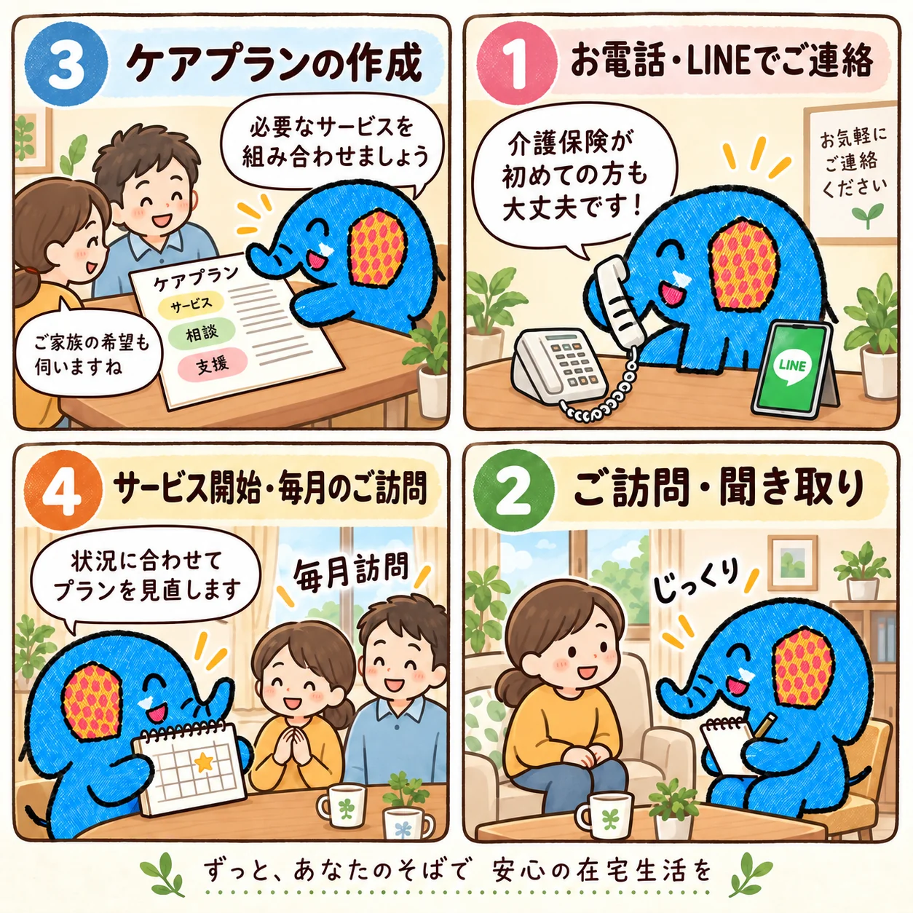

「どうしたらいい？」から始める
退院、物忘れ、仕事との両立。まだ介護保険のことが分からなくても、そのままの言葉で相談できます。
「介護のこと、何から始めればいいか分からない。」そんな段階からご相談ください。しあわせぞうさんは、ご本人とご家族の暮らしを一緒に考える居宅介護支援事業所です。
退院、物忘れ、仕事との両立。まだ介護保険のことが分からなくても、そのままの言葉で相談できます。
病院、役所、デイサービス、訪問介護、福祉用具。必要な支援を整理し、関係機関と連携します。
一度決めて終わりではありません。状況が変われば、立ち止まり、戻り、また一緒に組み立て直します。
制度の説明だけではなく、ご本人とご家族がどう暮らしたいかを起点に、一緒に考えます。
ケアプランの作成やご相談の費用は、介護保険から全額給付されるため、原則として自己負担はありません。（デイサービスなど各サービスの利用料は、別途1〜3割のご負担があります。）
医療・介護の関係機関と連携しながら、状況に応じた支援を一緒に考えます。
特定の事業者に偏らず、ご本人・ご家族に合うサービスを一緒に選びます。
翻訳アプリやビデオ通話も活用しながら、より相談しやすい環境を目指します。

介護保険の申請、ケアプランの作成、デイサービス、訪問介護、福祉用具、医療機関との連携。必要なサービスを一つずつ整理して、ご本人とご家族に合う暮らし方を一緒に考えます。
ご利用の流れを見る →まずはお電話かLINEでご相談ください。介護保険が初めてでも大丈夫です。
ご本人・ご家族の生活状況や希望を丁寧に確認します。
介護保険の申請がまだの方は、その手続きからお手伝いします。必要な支援や介護サービスを一緒に整理し、ケアプラン（どのサービスをどう使うかの計画）にまとめます。
開始後も状況を確認し、必要に応じてケアプランを見直します。
まだサービスを使うか決めていなくても大丈夫です。
まずは今困っていることを聞かせてください。